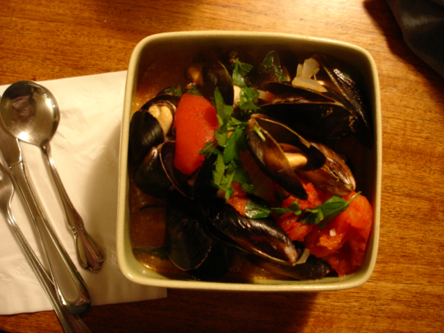
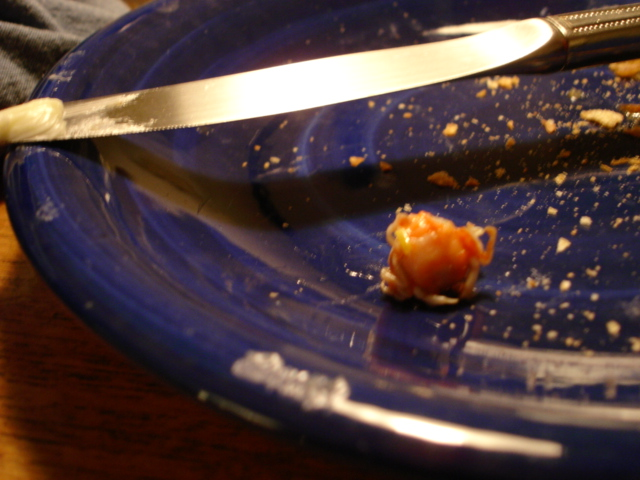
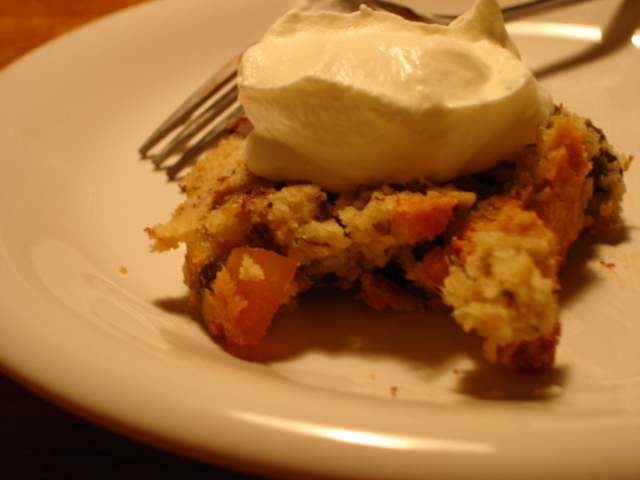

Mussels, wine, and an excuse to eat whipped cream
Everything I said about her is true, and more. Kate is dreamy, and so are her mussels—so tender! So sweet! So cheap! So full of crabs!
It was a crisp Sunday late afternoon, and my grumpiness was no match for the sun, shining persistently even as it set. I arrived chez Kate just in time to savor the spectacular view of Elliott Bay from her eighteenth-floor sublet before we rushed down to the market, slipping in just fifteen minutes before closing time. Strolling the wet brick streets under the Christmas lights, we collected our wares: big cans of whole stewed Italian tomatoes from DeLaurenti’s, a half-pint of cream and a shiny glass bottle of milk from the Pike Place Creamery, a baguette from Le Panier, and Italian parsley from the helpful guys at Frank’s Produce. At City Fish, the fishmongers—bundled in hooded sweatshirts and thick rubber aprons and knee-high boots—enthusiastically greeted Kate, a loyal customer, and we got “V.I.P.” treatment, paying only $3.00 for a generous bagful of clean, shiny Penn Cove mussels.
Back at home, we found a bottle of Chardonnay in the bottom of her fridge door, and I poured us each a glass as Kate began sautéing onions and garlic, making a broth with the dregs of a huge bottle of cheap white she’d been saving for just such occasions. To this she added most of a can of tomatoes and a touch of cream, and the mussels were put in to steam. They peeked open nearly instantly, and Kate ladled out big servings for each of us, scattering them with Italian parsley. The feasting began.

The empty shells clattered cheerily as we tossed them into the bowl in the center of the table, and we talked with our mouths full, alternating bites of meaty mussel with drippy chunks of broth-soaked bread. I’d tried to talk Kate out of buying bread at Le Panier, preferring a baguette with more chew and a thicker, more rustic crust, but she was right—this soft, fine-crumbed version was perfect for salty Plugra and for sopping up the winy, tomatoey juice. Best of all, lucky Kate found an unexpected bonus in one of her mussels: a very tiny but very scary baby crab, which she, shrieking in excitement and horror, proceeded to plunk onto her bread plate and who quickly became the evening’s third (albeit very still, very unresponsive, very cooked) participant.

But mussels and mini crabs are no match for my sweet tooth. Fortunately, earlier in the day, Kate had been given a very beautiful loaf of chocolate ginger banana bread. Under the watchful eye of the crab, we whipped a bowlful of cream with her wooden-handled whisk—in Kate’s family, everything is an excuse to eat whipped cream—and spooned it atop slices of the moist, cake-like bread.

Being generous, she didn’t say a word when I ate three slices, although I think she nearly matched me at two and a half and may have outdone me in cream consumption.
Ships floated by on the dark water, and we were very full.
Glenn’s Banana Bread with Chocolate Chips and Candied Ginger
Kate’s friend Glenn has been experimenting with candied ginger, and he had the wisdom to fold a handful of the stuff—along with chocolate chips—into a loaf of banana bread. The result is nearly impossible to stop eating, its dense richness cut by piquant studs of translucent golden ginger. He recommends using Trader Joe’s candied organic baby ginger, and he also makes a vegan version of this bread, for which the necessary substitutions appear below in parentheses.
1 cup granulated sugar (for vegan version, use raw sugar)
1 large egg (or 1 ½ tsp Ener-G Egg Replacer plus 2 Tbs warm water, says Glenn)
½ cup (1 stick) unsalted butter (or ½ c non-hydrogenated margarine), at room temperature
2 ripe medium-size bananas
3 Tbs milk (or soy milk)
2 cup unbleached all-purpose flour
1 tsp baking powder
½ tsp baking soda
1 cup chocolate chips
Small chunks of candied ginger, to taste
½ cup chopped walnuts, optional
Preheat oven to 350 degrees Fahrenheit. Grease a 9- by 5-inch loaf pan with butter or cooking spray, and set aside.
In a large mixing bowl, cream sugar, egg, and butter.
In a separate bowl, mash bananas; then mix with milk.
In another separate bowl, sift together flour, baking powder, and baking soda. Add flour mixture to butter mixture in three parts, alternating with banana-milk mixture in two parts, stirring by hand until just combined. Stir in chocolate chips, ginger, and optional nuts.
Turn batter into loaf pan, smoothing top with the back of a spoon, and bake for one hour, or until a toothpick inserted in the center comes out clean. Allow to cool for a few minutes; then remove bread from pan and cool on a wire rack.